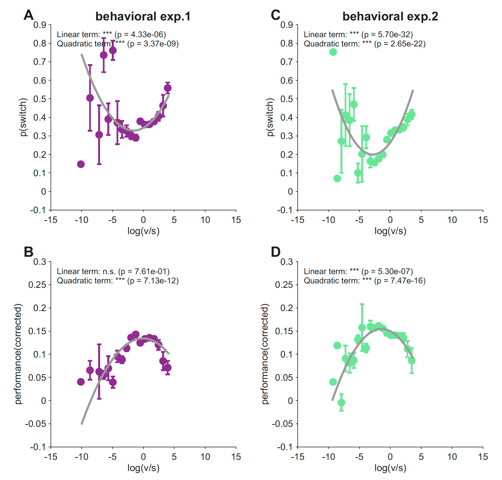
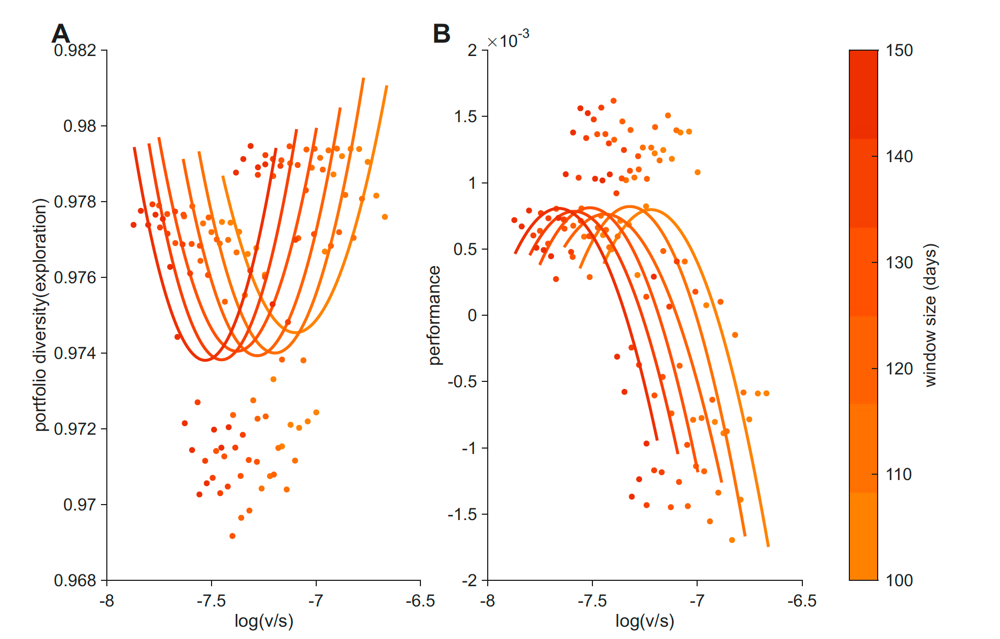

Nonlinear modulation of human exploration by distinct sources of uncertainty
- Department of Psychiatry and Behavioral Sciences, University of Minnesota
- Department of Neurosurgery, University of Minnesota
* Correspondence: aherman@umn.edu
For more details, see the preprint.
A common idea in decision research is that uncertainty drives exploration: when the world feels less knowable, people sample more options. The trouble is that “uncertainty” isn’t one thing.
Two flavors of uncertainty matter for the same kind of choice:
- Volatility — the underlying value of an option is changing. Old observations stop being informative; recent ones matter more.
- Stochasticity — the underlying value is stable, but observations around it are noisy. Any single outcome is unreliable, and you need to average across samples.
These two regimes call for the same response (more sampling) but for different reasons. We asked a sharper question: what happens when both are present in the same environment, and the participant has to weigh them simultaneously?
We had a specific prediction. When volatility dominates, sampling helps you track moving values. When stochasticity dominates, sampling helps you average out the noise. But when the two sources are balanced, the apparent best option should be relatively easy to identify and exploit. So we predicted that exploration would be a U-shaped function of the volatility-to-stochasticity ratio — minimized at balance, increasing as either source takes over.
That’s what we found, in two experiments, several model variants, multiple measures of switching, and — strikingly — in five years of stock market data.
The task and the model
Across both experiments, participants played a 300-trial three-armed restless bandit. Each arm’s reward probability evolved as a bounded Gaussian random walk:1 the value drifts a little on every trial, and the true volatility is fixed within a session.
For each participant, we fit a Kalman filter with two static parameters that the participant treats the environment as having: process noise σ (their inferred volatility, v) and observation noise ω (their inferred stochasticity, s).2 These two parameters describe what kind of uncertainty a participant attributes to the environment, separately from how much overall uncertainty they perceive.
A useful sanity check: across participants, fitted v and s were nearly uncorrelated (r = 0.04 in both experiments). They are estimating different things.
We then summarized each participant’s uncertainty composition by log(v/s) — positive values mean the participant treats the environment as volatility-dominated; negative values mean stochasticity-dominated; zero means balanced.
Exploration is a U-shape in log(v/s); performance is the inverted-U
We regressed each participant’s switching probability on log(v/s) and its square. In both experiments, the quadratic term was strongly positive:
- Experiment 1 (N = 1,001): b_quad = 0.0058, t = 5.94, p = 3.4 × 10⁻⁹
- Experiment 2 (N = 747): b_quad = 0.0081, t = 9.74, p = 2.7 × 10⁻²²
Switching was lowest near balance (log(v/s) ≈ 0) and rose as the ratio moved in either direction. Reward followed exactly the opposite shape — an inverted-U with the peak in the same region of parameter space (Experiment 1: p = 7.1 × 10⁻¹²; Experiment 2: p = 7.5 × 10⁻¹⁶).

The two patterns line up at the same location: the regime in which participants switch least is also the regime in which they earn most. People who treated the environment as roughly balanced — neither runaway change nor pure noise — exploited well, and the gain was visible in their reward.
The U-shape reflects a v × s interaction, not separate main effects
A U-shaped dependence on log(v/s) could come from a few different underlying structures. Maybe v and s each independently push switching in one direction, and we’re seeing their sum. Maybe one of them dominates. We compared five regression models predicting switching probability:
| Model | Exp. 1 R² | Exp. 1 BIC | Exp. 2 R² | Exp. 2 BIC |
|---|---|---|---|---|
| log(v/s) + log(v/s)² (ratio) | 0.031 | −598 | 0.061 | −704 |
| log(v) + log(s) (additive) | 0.018 | −585 | 0.015 | −669 |
| log(v) + log(s) + log(v) × log(s) (interaction) | 0.078 | −642 | 0.071 | −707 |
| log(v) + log(v)² + log(s) + log(s)² (quadratic main) | 0.036 | −592 | 0.064 | −696 |
| Full (quadratic + interaction) | 0.087 | −640 | 0.100 | −719 |
The additive model fared worst in both experiments. The interaction model beat both the additive and the ratio-only specifications. In Experiment 1, the v × s interaction term was the single strongest predictor of switching (t = −7.54, p = 1.0 × 10⁻¹³). The U-shape in log(v/s) is a compact one-dimensional summary of a genuine interaction between volatility and stochasticity — not the sum of two independent effects.
We also asked whether the absolute level of fitted uncertainty (log v + log s) might drive the pattern, in case some participants simply think the world is generally more uncertain. Adding the absolute level as a covariate produced no BIC improvement in Experiment 2 and only a marginal one in Experiment 1. The balance between volatility and stochasticity matters more than the total amount.
The effect is sharpest after losses
Switching is a coarse measure that mixes directed exploration, random choice, and feedback-driven responding. To localize the effect, we repeated the analysis on three more specific measures:
- p(switch | win) — switching after a rewarded trial
- p(switch | lose) — switching after a non-rewarded trial
- value-controlled switching — the residual switch rate after regressing out the model-derived value difference between the chosen and best unchosen arm
The U-shape replicated across all three. But it was strongest for post-loss switching — R² = 0.43 in Experiment 1 and R² = 0.61 in Experiment 2 — substantially larger than for any other measure. The effect on p(switch | win) was significant in Experiment 2 (p = 1.1 × 10⁻⁵) but not Experiment 1 (p = 0.18).
Negative feedback is precisely the moment when participants need to decide whether a bad outcome reflects environmental change, irreducible noise, or a reliable signal that should update their value estimate. The v/s balance shapes this interpretation most strongly when there’s a loss to interpret.
Robustness — the U-shape isn’t an artifact
We checked the result against the most plausible alternative explanations.
Counterfactual updating. The standard Kalman filter updates beliefs about unchosen arms via fictive learning. We refit the data with chosen-arm-only variants (a chosen-arm-only KF and a chosen-arm-only volatile Kalman filter) where unchosen arms are not updated. The U-shape replicated in three of four model × experiment combinations (Experiment 1 chosen-arm-only KF: trend, p = 0.12; all others p < 10⁻⁴).
Objective task difficulty. Maybe fitted s simply reflects how hard the environment was. We computed each participant’s experienced chance level — the mean of the three true reward probabilities averaged across the 300 trials — and added it as a covariate. Fitted ω was only weakly related to chance level (r = −0.04 in Experiment 1, r = −0.07 in Experiment 2), and the U-shape was unchanged after the correction (Experiment 1: p = 2.1 × 10⁻⁹; Experiment 2: p = 2.1 × 10⁻²⁵). The quadratic term was also significant within all six chance-level tertiles across the two experiments.
The effect is robust to how the model handles unchosen arms and to objective differences in task difficulty.
A parallel U-shape in S&P 500 returns
The behavioral result raised a different kind of question: is this U-shape something specific to bandit-task choice, or is it a general property of how systems allocate sampling across options when uncertainty has structure? To check, we ran the same analysis on a domain that has nothing to do with individual decision-making.
We took five years of daily returns for the 50 most-traded S&P 500 stocks.3 For each rolling window (100–150 trading days, in steps of 10), we computed:
- Volatility as the rolling standard deviation of changes in each stock’s mean return, averaged across stocks. This is a temporal measure — it tracks how the values themselves shift over time, not how widely they vary at any moment.
- Stochasticity as a composite of within-window return dispersion, autocorrelation, and a runs-test statistic — capturing how noisy and unpredictable returns are around their mean.
- Portfolio diversity as one minus the Herfindahl–Hirschman index of return-weighted shares — the market analog of “exploration.”
- Performance as mean daily return.
Market v and s were moderately correlated (r = 0.32–0.40), more than in the bandit data but still far from collinear. And portfolio diversity was a U-shaped function of log(v/s) across all five window sizes, with quadratic coefficients (b_quad = 0.034 to 0.049) that were larger than in our earlier analysis with a cross-sectional volatility measure. Mean daily return showed the corresponding inverted-U.

Markets are not literal explore–exploit agents — all prices are observable to all participants, so we use “diversification” rather than “exploration” — but the same formal relationship between log(v/s) and sampling breadth shows up at the aggregate level. Whatever is driving individual choice in the bandit task may be driving market allocation too.
What this means
The usual story is that exploration responds to uncertainty. Our story is one level finer: exploration responds to the composition of uncertainty.
Volatility and stochasticity ask different questions of the agent. Volatility asks whether the world has changed, and the right response is to discount old observations and sample again. Stochasticity asks whether the current outcome is reliable, and the right response is to keep sampling so noise can average out. Both push toward more sampling, but for opposite reasons. When one dominates, sampling has a clear job. When both are present in roughly equal measure — when the world is moderately changing and moderately noisy — neither argument for sampling is decisive, and the apparent best option is easier to identify and exploit. Reward is highest there, exactly as one would predict.
Two implications stand out for us.
Exploration may be best understood as a response to uncertainty’s structure, not to its amount. Two participants with the same total uncertainty can sit on opposite sides of the U-shape if their volatility-to-stochasticity balance differs. This may matter for how we think about altered exploration in clinical conditions like anxiety, addiction, and mood disorders, where existing accounts often cite “increased” or “decreased” uncertainty without distinguishing its sources.
The same formal relationship appears in markets. It’s striking that the same U-shape pattern emerges from five years of stock-return data, computed without any reference to individual cognition. We don’t want to overclaim — markets and bandit tasks differ in important ways — but the parallel suggests the relationship between uncertainty composition and sampling breadth may not be a quirk of individual decision-makers. It may be a more general property of how systems allocate effort when uncertainty has structure.
The post-loss result also has a specific clinical resonance. The strongest behavioral expression of the v/s balance was in how participants responded after a non-rewarded trial — exactly the moment when the interpretation of negative feedback (change vs. noise vs. signal) is most consequential. Future work might ask whether the same balance shapes negative-feedback interpretation in clinical populations.
Read the paper
Check our preprint: Nonlinear modulation of human exploration by distinct sources of uncertainty.
Acknowledgements
Funding details and acknowledgements are listed in the published paper.
Footnotes
Specifically, p(t + 1) = clip(p(t) + ε, 0.1, 0.9), with ε ∼ Normal(0, σ²_walk). Participants chose one of three slot machines on each trial and received binary feedback. In Experiment 2, the σ_walk that controlled the true environmental volatility was manipulated between subjects (high-volatility vs. low-volatility conditions, N = 747 total).↩︎
A softmax choice rule supplied a third fitted parameter, the inverse temperature β. Bayesian model comparison favored the static Kalman filter over a volatile Kalman filter (Piray & Daw, 2021), which is consistent with the task design — ground-truth volatility is constant within a session, so a static fit is appropriate and avoids tying trial-by-trial volatility estimates to the participant’s current behavior. Parameters were estimated via Laplace approximation around the MAP solution using the CBM toolbox (Piray et al., 2019), with empirical Bayes priors. Robustness analyses used a chosen-arm-only KF variant and a volatile Kalman filter — all reported effects replicated under these alternative specifications.↩︎
Public Kaggle dataset of S&P 500 daily prices, 2013–2018. We restricted to the 50 stocks with the highest mean trading volume.↩︎